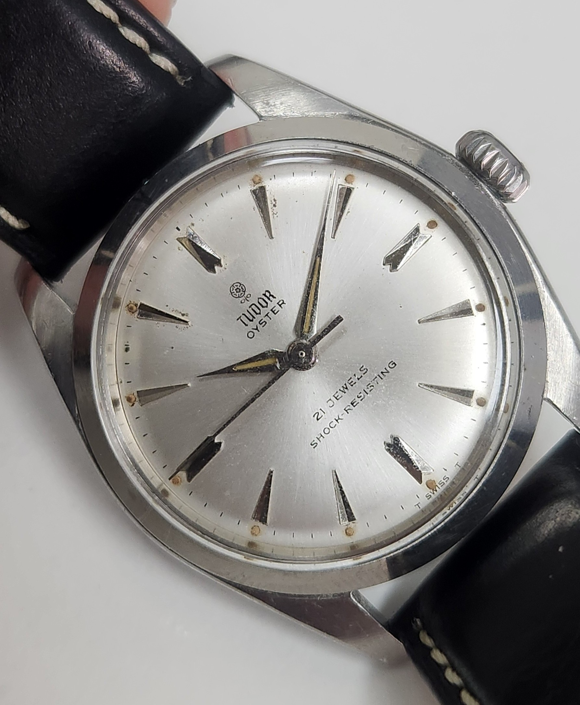

Tudor 7934
Tudor 7934
A classic Tudor movement undergoing a full service, cleaning, inspection and restoration.
About the Project
This Omega Calibre 562 was brought in for a full service and restoration. The aim was to return the movement to reliable operation while preserving the character and originality of this classic Omega calibre. The movement was completely disassembled, inspected and cleaned before being carefully reassembled and lubricated. Particular attention was given to the condition of the components, the automatic winding system and the overall performance of the movement.


Restoration
The restoration involved both the movement and the exterior of the watch. The movement was carefully dismantled, with the individual components cleaned and inspected under magnification. Particular attention was given to the pivots, jewels, gear train and automatic winding system. After cleaning and inspection, the movement was reassembled with appropriate lubrication applied throughout the movement. The gear train and automatic winding system were checked to ensure everything was operating freely and correctly. The exterior of the watch was also cleaned and carefully worked on to improve its overall presentation while retaining the original character of the timepiece.
The Finished Watch

After servicing, cleaning, lubrication and regulation, the Omega Calibre 562 was returned to working order. The completed restoration retains the character of the original watch while giving the movement the attention required for reliable operation.